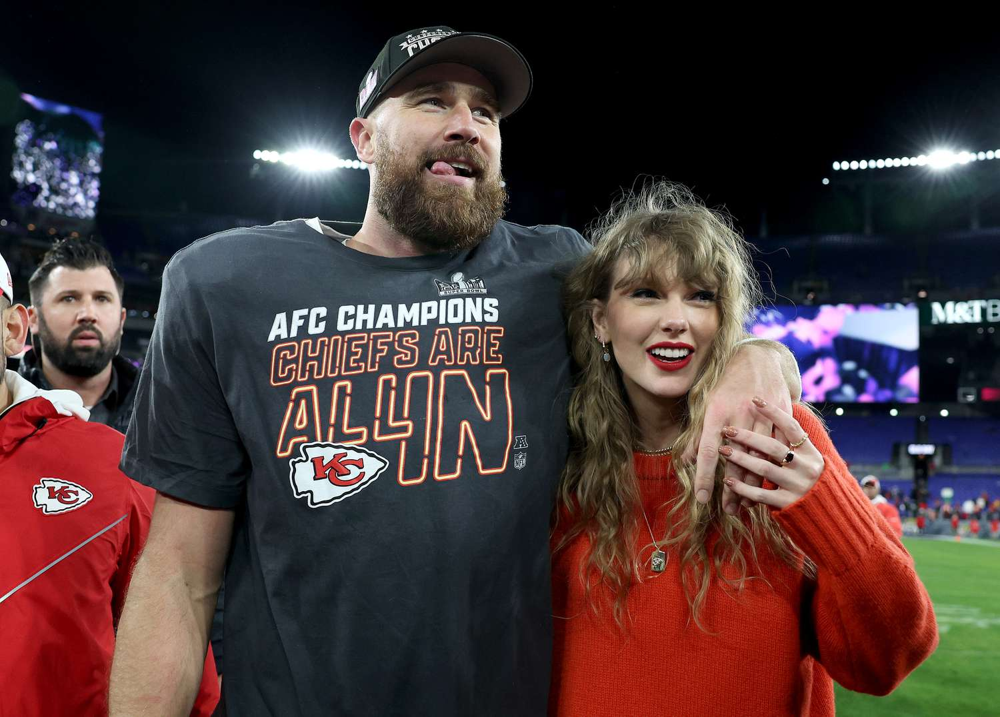
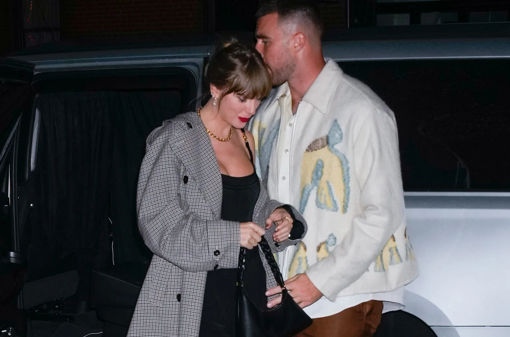

Taylor Swift and Travis Kelce - Getting Hitched?
Check out the Taylor Swift Website! She has cute, limited-edition
merch!
Travis Kelce and Taylor Swift have become one of the most talked-about celebrity couples in recent history. While their relationship was initially met with surprise and skepticism, it has blossomed into a genuine and public connection, leading many to wonder about the future of their romance. The speculation surrounding the possibility of marriage between the NFL star and the pop sensation has grown, especially with the couple making appearances together in public. As they continue to navigate their high-profile relationship, their potential marriage has become a topic of fascination for fans and media alike.

- Love Story
- Alchemy
- So High School
- 7/10
- It isn't my favorite.

Their relationship became public when Taylor was seen attending one of Travis’s games in September 2023, sparking immediate media attention. Swift’s presence at the game led to a flurry of speculation, with fans eagerly dissecting their body language and analyzing every moment. Although the couple kept their relationship mostly private at first, they gradually became more open about their connection, with Kelce and Swift sharing playful interactions on social media and appearing in each other's circles at various events. Their budding relationship seemed like a fairy tale, with fans joking about the possibility of the two eventually tying the knot.
Marriage rumors began circulating shortly after their relationship became public. The idea of a wedding between the two seemed almost inevitable, given their public support for each other and their undeniable chemistry. Fans of both Travis and Taylor started imagining what their wedding might look like, from the lavish celebrations to the star-studded guest list. Many even speculated that Taylor would draw inspiration from her own music, perhaps writing a song for their wedding or incorporating elements of her romantic ballads into the ceremony.
While neither Travis nor Taylor has explicitly discussed marriage, their actions have hinted at the potential for a long-term commitment. In interviews and public appearances, Kelce has spoken about how important it is for him to find a balance between his football career and his personal life. Similarly, Taylor has expressed how much she values the support of those closest to her, often sharing heartfelt moments with her friends and family on social media. Their actions suggest that they are both serious about building a strong and lasting relationship, with marriage being a natural next step.

However, marriage also brings challenges, especially for a couple with the level of fame that Travis and Taylor share. Their every move is constantly scrutinized, and the pressures of their respective careers could pose obstacles. Travis’s NFL schedule is demanding, while Taylor’s tours and music releases require her to be constantly on the move. Nevertheless, both are known for their resilience and commitment to their passions, which bodes well for the possibility of a successful and enduring partnership. Marriage could provide them with the stability they need to balance their personal and professional lives.
Ultimately, whether or not Travis Kelce and Taylor Swift get married remains to be seen. The future of their relationship may depend on a variety of factors, including their individual career choices, personal growth, and mutual commitment to each other. However, the idea of them walking down the aisle together is not out of the realm of possibility. Their story, filled with love, laughter, and public scrutiny, is a testament to the unpredictability of relationships in the modern age—where two people from different worlds can come together, and the world watches eagerly as their love story unfolds.


Scroll to top